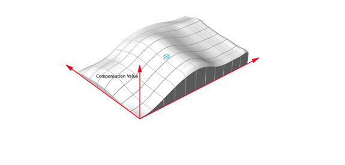
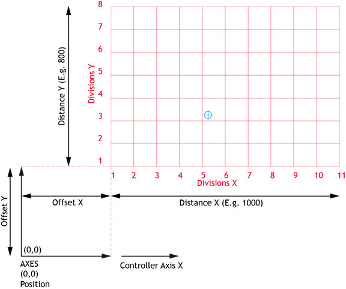

Axis Command
COMPENSATE_XY(table, opt, x_axis, x_div, x_dist, x_offset, Y_axis, y_div, y_dist, y_offset)
COMPENSATE_XY is designed to allow for corrections to be superimposed onto motion based on the measured position of the axes involved in the motion to compensate for errors introduced into the motion by things like ball screws.

The table values are always laid out as a sequence of values for increasing X with the first Y value, then the increasing X with the second Y value etc: X0Y0, X1Y0, X2Y0, X3Y0… then X0Y1, X1Y1, X2Y1, X3Y1… X0Y2, X1Y2, X2Y2, X3Y2… etc. etc.
The values must be evenly spread along the axis and the start and end values count towards the “X div” and “Y div” values:
For example:
Suppose a 100 mm X axis was divided into 10 mm compensation values. The x_div value would be 11, as 11 compensation values would be required for 0, 10, 20, 30, 40, 50, 60, 70, 80, 90 and 100 mm.
If the Y axis were 80 mm and divided into 10 mm compensation values, 9 rows of values would be required so a total of 11 x 9 = 99 values.
The COMPENSATE_XY command linearly interpolates between the compensation table values in 2 dimensions. The programmer should allow for this when deciding on the number of compensation divisions.
Working area:
Using the x_dist, x_offset, y_dist and y_offset values, you can effectively define a working area for the compensation.
For example:
x_dist = 300
x_offset = 25
y_dist = 300
y_offset = -150
The working area is now effectively (25, -150) to (325, 150) for the table of data points.
If the axis moves outside of the working area the nearest value inside the area will be applied as compensation.
Starting position:
When the COMPENSATE_XY command is first made, the compensation value for the current position (in or outside the working area) is calculated. This is then applied to all subsequent calculations as an offset to avoid the axis jumping when the command is first made. In this way the COMPENSATE_XY command can be started with the axes in any position.
To remove COMPENSATE_XY from the motion register MTYPE, use CANCEL.
|
Parameter |
Description |
|
|
table |
Start of offset data in TABLE memory |
|
|
opt |
Command options |
|
|
Bit 0 |
0 : Compensation follows MPOS 1 : Compensation follows DPOS |
|
|
x_axis |
X Axis number |
|
|
x_div |
Number of divisions of X data on grid |
|
|
x_dist |
Length on X axis corresponding to the data points |
|
|
x_offset |
Offset distance to the X axis to the first data point (positive or negative) |
|
|
y_axis |
Y Axis number |
|
|
y_div |
Number of divisions of Y data on grid |
|
|
y_dist |
Length on X axis corresponding to the data points |
|
|
y_offset |
Offset distance to the Y axis to the first data point (positive or negative) |
|

The number of divisions in the data depends on the grid of compensation values available and is independent of the distance. For example, a machine bed that is 500mm long (X) by 400 mm wide (Y) might have compensation values measured every 4mm. In this example the “X div” = 500 / 4 +1 = 126 and the “Y div” = 400 / 4 +1 = 101. This would require 501 x 101 (50601) data points for 1 COMPENSATE_XY command.
All distances x_dist, x_offset, y_dist, y_offset and TABLE data are in the axis units (for example mm).
In some applications, both axes of a machine bed require compensation for ball screw errors depending on their position:
Axis 0 - Motor Axis - COMPENSATE_XY AXIS(0) + ADDAX(8)
Axis 1 - Motor Axis - COMPENSATE_XY AXIS(1) + ADDAX(9)
Axis 8 - Virtual Axis - Run motion X axis commands
Axis 9 - Virtual Axis - Run motion Y axis commands
'Define tables of offsets at table locations 1000 and
3000:
UNITS AXIS(0) = 1000
UNITS AXIS(1) = 1000
UNITS AXIS(8) = UNITS AXIS(0)
UNITS AXIS(9) = UNITS AXIS(1)
ADDAX(8) AXIS(0)
ADDAX(9) AXIS(1)
COMPENSATE_XY(1000, 0, 8, 51, 500, 0, 9, 41, 400, 0) AXIS(0)
COMPENSATE_XY(3000, 0, 8, 51, 500, 0, 9, 41, 400, 0) AXIS(1)
'Moves on axes 8 and 9 here will be executed on axes 0 and 1 with compensation